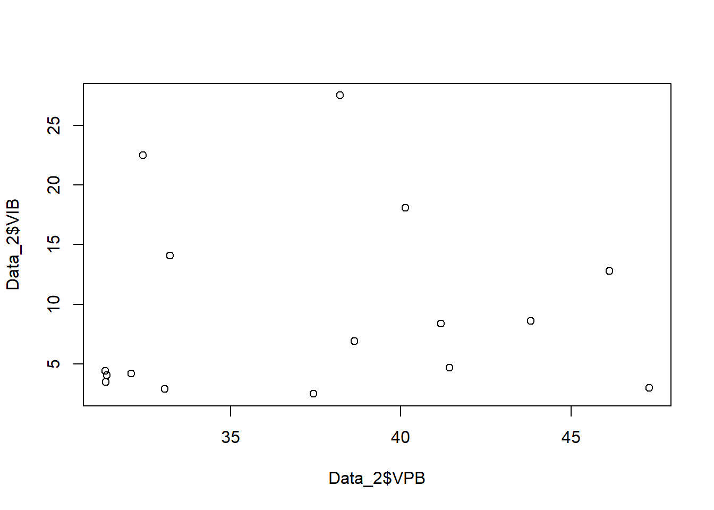

library(tidyverse)
library(readxl)
library(WDI) Pengaruh Produksi Beras terhadap Impor Beras Pada Tahun 2007-2022 di Indonesia
Metode Penelitian Politeknik APP Jakarta

1 Pendahuluan
1.1 Latar belakang
Indonesia merupakan negara dengan kekayaan sumber daya alam yang tersebar di seluruh wilayah. Oleh karena itu, Indonesia dikenal sebagai negara agraris yang mayoritas masyarakatnya bermatapencaharian sebagai petani. Sektor pertanian merupakan sektor primer dan mempunyai peranan penting dalam perekonomian nasional. Hal ini didukung oleh iklim tropis Indonesia dan struktur tanah yang cocok untuk pertanian. Salah satu hasil dari sektor pertanian adalah beras yang merupakan makanan pokok masyarakat Indonesia, untuk memenuhi kebutuhan konsumsi beras seluruh masyarakat Indonesia.
Menurut Kementerian Pertanian (2014), masyarakat Indonesia tercatat sebagai konsumen beras tertinggi dunia yang hanya mengkonsumsi 30 kg per kapita pertahun. Sementara masyarakat Indonesia mengkonsumsi sekitar 130 kg perkapita, hal ini juga berpengaruh pada volume impor beras di Indonesia karena kegiatan impor beras akan dilakukan apabila perhitungan selisih harga beras yang akan di impor lebih murah disbanding harga beras dalam negeri.
Produksi beras dalam negeri diharapkan mampu memenuhi kebutuhan seluruh penduduk Indonesia. Namun, kenyataannya jumlahnya tidak mencukupi sehingga pemerintah mengimpor beras demi menjaga pasokan beras Indonesia.
Penelitian ini akan mengeksplorasi dan menganalisis pengaruh produksi beras terhadap impor beras di Indonesia dari tahun 2007 hingga 2022. Pemahaman tentang hubungan ini diharapkan dapat memberikan wawasan tentang faktor-faktor yang mempengaruhi ketergantungan terhadap impor beras serta memberikan dasar untuk perumusan kebijakan yang lebih efektif dalam meningkatkan produksi beras domestik.
1.2 Ruang lingkup
Dalam penelitian ini penulis mengambil objek penelitian dari Badan Pusat Statistik Indonesia. Ruang lingkup penelitian ini terdapat 2 variabel antara lain volume produksi beras di Indonesia dan volume impor beras di Indonesia. Data yang digunakan adalah data yang bersifat time series yaitu dalam kurun waktu 2007-2022, data inilah yang kemudian menjadi objek penelitian.
1.3 Rumusan masalah
- Apakah produksi beras berpengaruh pada impor beras di Indonesia?
- Bagaimana hubungan produksi beras terhadap impor beras di Indonesia?
1.4 Tujuan dan manfaat penelitian
Tujuan dari penelitian ini adalah untuk mempelajari dan menganalisis pengaruh produksi beras terhadap tingkat impor beras Indonesia pada tahun 2007 hingga 2022.Hasil dari penelitian ini diharapkan dapat membantu pelaku usaha di sektor pertanian untuk mengidentifikasi peluang dan tantangan terkait produksi dan impor beras. Dan diharapkan juga dapat memberikan kontribusi penting terhadap pemahaman kita tentang dinamika kompleks antara produksi dan impor beras di Indonesia.
1.5 Package
Packages yang digunakan antara lain sebagai berikut:
2 Studi pustaka
Beras Sesuai dengan Peraturan Menteri Perdagangan Republik Indonesia Nomor 57/MDag/Per/8/2017 pasal 1 ayat 1, pengertian beras adalah biji-bijian baik berkulit, tidak berkulit, diolah atau tidak diolah yang berasal dari spesies Oriza Sativa.
Produksi Menurut Khusaini (2013:36) “produksi merupakan transformasi input atau bahan baku yang dibeli oleh perusahaan, yang kemudian diproses menjadi output atau barang maupun produk yang siap jual”. Menurut Joesron dan Fathorrazi (2012:87) “produksi merupakan hasil akhir dari proses atau aktivitas ekonomi dengan memanfaatkan beberapa masukan atau input untuk menghasilkan output. penelitian, analisis kuantitatif/statistik, data bersifat dengan tujuan untuk menguji hipotesis yang telah ditetapkan.
Impor Menurut Mankiw (2013), impor adalah barang dan jasa yang diproduksi di luar negeri untuk dijual di dalam negeri. Sedangkan menurut Amir (1999) impor merupakan suatu kegiatan memasukkan barang-barang dari luar negeri sesuai dengan ketentuan pemerintah ke dalam peredaran dalam masyarakat yang dibayar dengan mempergunakan valuta asing.
3 Metode penelitian
3.1 Data
Berikut adalah data yang digunakan sebagai objek penelitian, data dibawah ini merupakan data volume produksi beras dan volume impor beras.
| tahun | VPB | VIB |
|---|---|---|
| 2007 | 33.22 | 14.06 |
| 2008 | 33.06 | 2.9 |
| 2009 | 37.43 | 2.5 |
| 2010 | 38.64 | 6.9 |
| 2011 | 38.22 | 27.5 |
| 2012 | 40.14 | 18.1 |
| 2013 | 41.43 | 4.7 |
| 2014 | 41.18 | 8.4 |
| 2015 | 43.82 | 8.6 |
| 2016 | 46.13 | 12.8 |
| 2017 | 47.3 | 3 |
| 2018 | 32.42 | 22.5 |
| 2019 | 31.31 | 4.4 |
| 2020 | 31.33 | 3.5 |
| 2021 | 31.36 | 4.07 |
| 2022 | 32.07 | 4.2 |
#import dataset
library(readxl)
library("tidyverse")
Data_2 <- read_excel("~/SMT 3/METODOLOGI PENELITIAN/Data 2.xlsx")
head(Data_2)# A tibble: 6 × 3
Tahun VPB VIB
<dbl> <dbl> <dbl>
1 2007 33.2 14.1
2 2008 33.1 2.9
3 2009 37.4 2.5
4 2010 38.6 6.9
5 2011 38.2 27.5
6 2012 40.1 18.1penelitian ini menggunakan data sekunder dengan bentuk data time series 2007-2022, data yang dipakai ialah data yang telah diolah dengan sumber Badan Pusat Statistik Indonesia.
library(readxl)
library(tidyverse)
Data_2 <- read_excel("~/SMT 3/METODOLOGI PENELITIAN/Data 2.xlsx")
plot(Data_2$VPB,Data_2$VIB)
3.2 Metode analisis
Metode yang dipilih adalah regresi univariat atau Ordinary Least Square (OLS)dengan 1 variabel independen. Penelitian ini bermaksud mencari hubungan antara VPB dan VIB. Spesifikasi yang dilakukan adalah: \[ y_{t}=\beta_0 + \beta_1 x_t+\mu_t \] di mana \(y_t\) adalah VIB dan \(x_t\) adalah VPB.
4 Pembahasan
4.1 Pembahasan masalah
#import dataset
library(readxl)
library("tidyverse")
Data_2 <- read_excel("~/SMT 3/METODOLOGI PENELITIAN/Data 2.xlsx")
head(Data_2)# A tibble: 6 × 3
Tahun VPB VIB
<dbl> <dbl> <dbl>
1 2007 33.2 14.1
2 2008 33.1 2.9
3 2009 37.4 2.5
4 2010 38.6 6.9
5 2011 38.2 27.5
6 2012 40.1 18.1Hubungan antara produksi beras dan impor beras dapat digambarkan sebagai dinamis. Peningkatan produksi beras dalam negeri pada tahun-tahun tertentu cenderung mengurangi kebutuhan akan impor. Sebaliknya, penurunan produksi dapat meningkatkan ketergantungan pada impor.
4.2 Analisis masalah
Hasil regresinya adalah
reg<-lm(VPB~VIB,data=Data_2)
summary(reg)
Call:
lm(formula = VPB ~ VIB, data = Data_2)
Residuals:
Min 1Q Median 3Q Max
-5.8916 -5.2599 0.1005 3.8892 10.1674
Coefficients:
Estimate Std. Error t value Pr(>|t|)
(Intercept) 36.98462 2.27266 16.274 1.72e-10 ***
VIB 0.04932 0.19142 0.258 0.8
---
Signif. codes: 0 '***' 0.001 '**' 0.01 '*' 0.05 '.' 0.1 ' ' 1
Residual standard error: 5.691 on 14 degrees of freedom
Multiple R-squared: 0.00472, Adjusted R-squared: -0.06637
F-statistic: 0.06639 on 1 and 14 DF, p-value: 0.8004Analisis regresi menunjukkan bahwa variabel independen, yaitu Volume Produksi Beras (VPB), tidak memiliki dampak signifikan pada Volume Impor Beras (VIB) di Indonesia. Koefisien regresi untuk VPB tidak signifikan secara statistik (t value = 0.258, p-value = 0.8). Oleh karena itu, berdasarkan analisis ini, tidak dapat diambil kesimpulan bahwa produksi beras memiliki pengaruh yang signifikan terhadap impor beras di Indonesia.
5 Kesimpulan
Setelah dilakukan penelitian, maka dapat disimpulkan bahwa produksi beras memiliki pengaruh terhadap impor beras di Indonesia, tetapi tidak signifikan. Analisis data menunjukkan bahwa adanya kecenderungan negatif antara produksi beras dan impor beras, yang berarti peningkatan produksi beras dalam negeri cenderung menyebabkan penurunan volume impor beras, dan sebaliknya. Hal ini dapat diartikan bahwa semakin tinggi produksi beras di Indonesia, semakin kecil kebutuhan untuk mengimpor beras dari luar negeri.
6 Referensi
Arifin, Zeina Azilia. “ANALISIS PENGARUH JUMLAH PRODUKSI BERAS, KONSUMSI BERAS, HARGA BERAS DALAM NEGERI, KURS RIIL, PDB RIIL DAN JUMLAH PENDUDUK TERHADAP IMPOR BERAS DI INDONESIA.” Universitas Islam Indonesia, 2022. https://dspace.uii.ac.id/bitstream/handle/123456789/39465/15313135.pdf?sequence=1.
“Peraturan Menteri Perdagangan Nomor 57/M-DAG/PER/8/2017 Tahun 2017 Tentang Penetapan Harga Eceran Tertinggi Beras.” August 2017. https://peraturan.bpk.go.id/Details/128701/permendag-no-57m-dagper82017-tahun-2017.
Prinadi, Riska, Edy Yulianto, and M. Kholid Mawardi. “Pengaruh Nilai Tukar Rupiah, Harga Beras Internasional Dan Produksi Beras Dalam Negeri Terhadap Volume Impor Beras Indonesia ( Studi Impor Beras Indonesia Tahun 2002-2013).” Jurnal Administrasi Bisnis S1 Universitas Brawijaya 34 (May 2016): 96–103.
Rahayu, Sri Endang, and Hastina Febriaty. “Analisis Perkembangan Produksi Beras dan Impor Beras di Indonesia.” Seminar Nasional Kewirausahaan 1, no. 1 (October 2019): 219–26. https://doi.org/10.30596/snk.v1i1.3613.
Ruvananda. “Analisis Faktor-Faktor Yang Mempengaruhi Impor Beras Di Indonesia,” n.d.